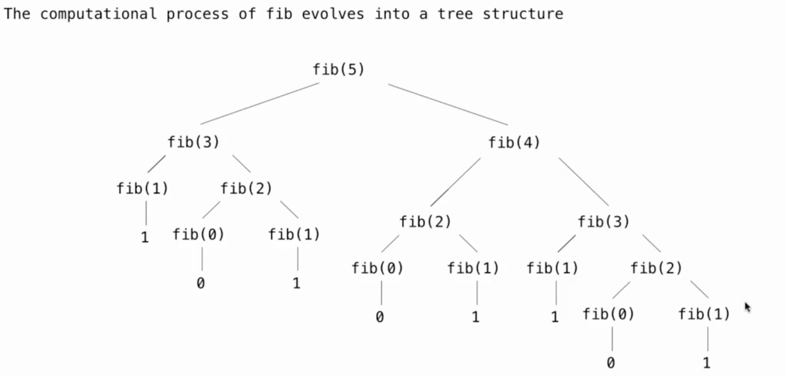

Week 1
Names,Assignment
-
在Python中，
Name（名称）是指向对象的引用。在Python的上下文中，几乎所有的东西都是对象，包括函数、变量、数据结构等。Name可以是一个变量名，也可以是一个函数名。当你创建一个变量或函数时，你实际上是在为一个对象创建了一个名称（或标识符），通过这个名称可以访问或调用该对象。 -
在Python中，
assignment（赋值）是将一个值绑定到一个名称（通常是一个变量名）的过程。赋值操作使用等号=来完成。当进行赋值时，等号右侧的表达式会被计算，然后其结果会被绑定到等号左侧的名称上。
>>> f = min
>>> f = max
>>> g, h = min, max
>>> max = g
>>> max(f(2,g(h(1,5),3)),4)
3
- 在上面这个例子中，不同于C，我们将内置函数赋值给变量后，如
f = max，那么f对应的就是max函数的内容，并不会随着max的改变而改变
Defining Functions
- 纯函数（Pure Functions） 是这样一种函数，它满足以下两个主要条件：
- 相同的输入总是产生相同的输出。纯函数不依赖于并且也不修改定义在函数外部的状态。这意味着，给定相同的参数，无论调用多少次，纯函数都会返回相同的结果。
- 没有副作用。纯函数不会改变任何外部状态（例如，不修改全局变量，不写入数据库等），也不会有如打印到控制台、写文件这样的操作。
def adder(a,b):
return a+b
- 非纯函数（Non-Pure Functions） 是指不满足上述纯函数条件的函数。它们可能依赖于外部状态，或者在执行过程中改变外部状态（产生副作用）。
counter = 0
def increment():
global counter
counter += 1
return counter
- 在Python中，
function signature（函数签名）指的是函数定义的一部分，它包括函数的名称、接收的参数（包括位置参数、关键字参数、可变位置参数、可变关键字参数等）以及有时候包括返回类型的注解。函数签名为调用者提供了函数如何被调用的信息。
def greet(name: str) -> str:
return "Hello, " + name
- 在这个例子中，函数签名是
greet(name: str) -> str，它告诉我们： - 函数的名称是greet。
- 它接受一个名为name的参数，该参数被注解为str类型。
- 它返回一个str类型的值。
def divide_exact(n,d=10):
return n//d, n%d
d=10并不是为d赋值，而是当没有传入d的值时，会为d默认赋值为10
Print and None
-
在Python中，
None是一个特殊的常量，用于表示空值或者无值的状态。它是NoneType类型的唯一值。None经常用于函数返回值，表示函数没有返回任何具体的值。同时，它也常用于变量初始化，以及表示某些对象或变量尚未被赋予具体的值。 -
在Python中，
print是一个内置函数，用于将信息输出到标准输出（通常是屏幕）。它可以接受多个参数，将它们转换为字符串（如果它们不已经是字符串的话），然后输出这些字符串，参数之间默认用空格分隔，最后默认输出一个换行符。同时print函数没有返回值，在调用的时候就会返回None
>>> print(1)
1
>>> print(1,2)
1 2
>>> print(print(1),print(2))
1
2
None None
Boolean Contexts
- False Values in Python:
- False
- 0
- ''
- None
- True Values in Python: Anything else
Short Circuiting
and操作符，Python会先评估左侧表达式，若为False则结果为左侧表达式的值；若为True,则结果为右侧表达式的值or操作符，Python会先评估左侧表达式，若为False则结果为右侧表达式的值；若为True,则结果为左侧表达式的值
>>> True and 13
13
>>> False or 0
0
>>> not 10
False
>>> not None
True
Week 2
Locally Defined Functions
def make_adder(n):
def adder(k):
return k+n
return adder
"""
>>> add_three = make_adder(3)
>>> add_three(4)
7
"""
make_adder(n)定义了一个函数，这个函数内部定义了另一个函数adder(k)。adder函数将其参数k与外部函数的参数n相加，并返回结果。- 当
make_adder被调用时，比如make_adder(3)，它返回一个adder函数，这个adder函数将会把它的参数和3相加。
Functions that accept arbitrary arguments
- 我们想编写一个接受任意数量的参数的函数，然后使用这些参数调用另一个函数
- 运用 *args 以接受任意数量的参数
>>> def printed(f):
... def print_and_return(*args):
... result = f(*args)
... print('Result:', result)
... return result
... return print_and_return
>>> printed_pow = printed(pow)
>>> printed_pow(2, 8) # *args represents the arguments (2, 8)
Result: 256
256
>>> printed_abs = printed(abs)
>>> printed_abs(-10) # *args represents one argument (-10)
Result: 10
10
def make_averaged(original_function, samples_count=1000):
"""Return a function that returns the average value of ORIGINAL_FUNCTION
called SAMPLES_COUNT times.
To implement this function, you will have to use *args syntax.
>>> dice = make_test_dice(4, 2, 5, 1)
>>> averaged_dice = make_averaged(roll_dice, 40)
>>> averaged_dice(1, dice) # The avg of 10 4's, 10 2's, 10 5's, and 10 1's
3.0
"""
def averaged(*args):
total = 0
for i in range (samples_count):
total += original_function(*args)
return total/samples_count
return averaged
High Order Function
高阶函数（High Order Function）是指至少满足下列一个条件的函数：
- 接受一个或多个函数作为参数。
- 返回另一个函数作为结果。
- 高阶函数在函数式编程中非常重要，它们允许函数操作函数，提供了极大的灵活性和表达力。例如，Python中的map和filter都是高阶函数，因为它们接受一个函数作为参数。另一个例子是装饰器（Decorator），它接受一个函数作为输入并返回一个增强版的函数。
- 高阶函数，注意是在调用函数还是在赋值
def cake():
print('beets')
def pie:
print('sweets')
return 'cake'
return pie
"""
>>> chocolate = cake()
beets
>>> chocolate
<function pie at ...>
>>> chocolate()
sweets
'cake'
>>> more_chocolate, more_cake = chocolate(),cake
sweets
>>> more_chocolate
'cake'
"""
def snake(x,y):
if cake == more_cake:
return chocolate
else:
return x+y
"""
>>> snake(10,20)
<function pie at ...>
>>> snake(10,20)()
sweets
'cake'
>>> cake = 'cake'
>>> snake(10,20)
30
Horse and Mask
- 形参、frame的绕中绕，搞清每一个frame和它的parent
def horse(mask):
horse = mask
def mask(horse):
return horse
return horse(mask)
mask = lambda horse: horse(2)
"""
>>> horse(mask)
2
"""
- 在
global frame中我们定义了两个函数，一个是horse，一个是由lambda表达式构成的mask - 然后调用
horse(mask)，这里是在global下调用的，所以horse和mask就指向上文的两者 - 然后进入
f1: horse,[parent = Global]，开始执行body，执行到horse = mask，呈现下图的关系：
- 在定义了内部的
mask函数后，返回horse(mask)，这时候两者所指对象有所变化：
- 于是进入
f2: λ <line 7> [parent = Global]，在这个函数里horse其实指向之前定义的内部函数[parent = f1]
- 然后因为在
f2里面返回的是horse(2)，所以进入f3: mask [parent = f1]，因而return 2
- 又回到
f2返回2，又回到f1返回2

Lambda Expression
- Lambda 表达式，也称为匿名函数，是一种在 Python 中快速定义单行的最小函数的方式。Lambda 函数可以接受任意数量的参数，但只能有一个表达式。这个表达式的计算结果会被这个函数自动返回。
add = lambda x, y: x + y
print(add(5, 3)) # 输出: 8
is_even = lambda x: x % 2 == 0
print(is_even(4)) # 输出: True
print(is_even(5)) # 输出: False
make_adder = lambda x:lambda y:x+y
adder = make_adder(3)
print(adder(5)) #输出：8
- 结合高阶函数和lambda表达式，我们可以写出一些功能强大的函数，比如inverse
def search(f):
x = 0
while True:
if f(x):
return x
x += 1
# 这个函数用来寻找满足条件的x
def inverse(f):
return lambda y:search(lambda x:f(x) == y)
# 这个高阶函数返回一个单参函数search
# 其中向search传入了 f(x) == y 的判断函数
"""
>>> square = lambda x: x*x
>>> sqrt = inverse(square)
>>> sqrt(16)
4
"""
# 当然这个版本只适用于普通的整数，更精确的平方根求法可以用牛顿法或者平方根倒数算法
Currying
- Currying 是一种在函数式编程中常见的技术，它指的是将一个多参数的函数转换成一系列使用一个参数的，Higher-Order的函数的过程。
def curry2(f):
def g(x):
def h(y):
return f(x,y)
return h
return g
"""
>>> from operator import add
>>> m = curry2(add)
>>> add_three = m(3)
>>> add_three(2)
5
>>> curry2 = lambda f: lambda: x: lambda y: f(x,y)
...
...
"""
Decorators
- 装饰器（Decorator）是 Python 中一个非常强大的功能，允许你在不修改原始函数或方法定义的情况下，给它们添加额外的功能。装饰器本质上是一个函数，它接受一个函数作为参数并返回一个新的函数。使用装饰器可以实现很多功能，比如访问控制、日志记录、测量执行时间等。
- 装饰器的基本语法是在函数定义前使用
@符号加上装饰器的名称。 - 但对于lambda表达式就不能直接使用
@，而是调用Decorator函数
def trace1 (fn):
"""Returns a version of fn that first prints before it is called
fn - a function of 1 argument
"""
def trace(x):
print('Calling',fn,'on argument',x)
return fn(x)
return trace
@trace1
def square(x):
return x*x
@trace1
def a_function:
return 1
"""
>>> square(4)
Calling <function square at ...> on argument 4
16
"""
Recursion
- For Instance
def print_sum(x):
print(x)
def next_sum(y):
return print_sum(x+y)
return next_sum
print_sum(1)(3)(5)

- 递归函数（Recursion Functions） 是在其定义中调用自身的函数。
- 基本情况（Base Case）：这是递归停止的条件，没有它，递归将无限循环下去。
- 递归步骤（Recursive Step）：在这一步中，函数调用自身，通常是用一组不同的参数。
Mutual Recursion
- 互递归（Mutual Recursion） 是指两个或多个函数相互调用对方以实现递归的情况。
Luhn Algorithm
- 从右边第二个数字开始，每隔一个数字乘以2。
- 如果乘以2的结果是两位数，则将这两位数相加得到一个单一的数字(e.g. 10 -> 1 + 0 = 1)
- 然后加和所有数字，如果这个总和可以被10整除则是有效的

def luhn_sum(n):
if n < 10:
return n
else :
all_but_last, last = split(n)
return luhn_sum_double(all_but_last) + last
def luhn_sum_double(n):
all_but_last, last = split(n)
double_last_sum = sum_digits(2 * last)
if n < 10:
return double_last_sum
else:
return luhn_sum(all_but_last) + double_last_sum
Tree Recursion
- 树递归（Tree Recursion） 是一种特殊类型的递归模式，其中一个函数在其执行过程中不止一次地调用自身。每次函数调用自身时，都会创建一个新的分支，在逻辑上形成了一棵树。 
例如：Cascade函数
def cascade(n):
if n < 10:
print(n)
else :
print(n)
cascade(n // 10)
print(n)
"""
>>> cascade(123)
123
12
1
12
123
"""
- Inverse Cascade
"""
1
12
123
1234
123
12
1
"""
# 对于形如这样的inverse_cascade，我们打算把函数拆分成三部分：grow，print，shrink
def inverse_cascade(n):
grow(n)
print(n)
shrink(n)
#然后引入f_then_g函数，来调整函数的前后调用顺序
def f_then_g(f,g,n):
if n:
f(n)
g(n)
#最后定义grow和shrink
grow = lambda n: f_then_g(grow, print, n // 10)
shrink = lambda n: f_then_g(print, shrink, n // 10)
- Counting Partitions
count_partitions(n,m)表示用不超过m的正整数来表示n，其中这些数的排列成非递减的顺序，就叫做n的划分数
def count_partitions(n,m):
if n == 0:
return 1 #什么都没有也是一种划分
elif n < 0:
return 0
elif m == 0:
return 0
else:
with_m = count_partitions(n-m,m)
without_m = count_partitions(n,m-1)
result = count_partitions(5,3)
# 1 + 1 + 1 + 1 + 1 = 5
# 1 + 1 + 1 + 2 =5
# 1 + 2 + 2 = 5
# 1 + 1 + 3 = 5
# 2 + 3 = 5